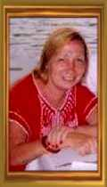
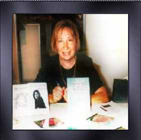
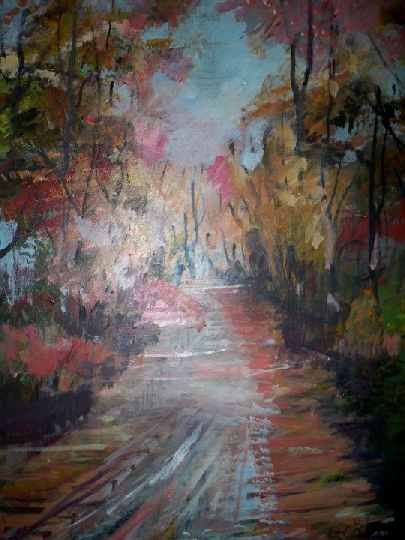

“Creo que todos tenemos adentro una brújula que nos conduce adonde anhelamos.
No olvides confiar en tu brújula, consúltala a menudo, porque el conocer su presencia te dará fortaleza para lo que la vida te depare..."
"Hace falta paciencia, y confianza, para alcanzar la meta, solucionar problemas, y realizar sueños. Aunque por momentos parezca que ya no puedes seguir, conozco tu fortaleza, y sabrás sobrellevar todo lo que la vida te depare...."fuente:Confía
Y no te olvides..."La gente se torna humilde cuando sufre"

. . . .
Desde muy joven, ANA MARIA ZACAGNINO, revela su legado de vida; ésa que planteara con singular entereza, dotándola de ideales fundamentales, en aras de la cultura,
desde el nido prístino de su transitar.
A los 17 años se desempeñaba como docente y su proyección de existencia, fue y es, el arte y la enseñanza; que concibiera con
una visión de alegría: Alegría, simplemente, por estar y ser en el mundo.
Prueba de ello, fue su precoz inclinación por escribir poemas, que lo hizo desde los cinco años de edad y su afición al baile de danzas españolas y folklore de nuestro país.
Y por otra parte, cantando y ejecutando el piano y la guitarra, lo que le permitió participar en el teatro Ópera, como bailarina de danzas españolas a los 7 años.
“La música es parte de nuestra vida. La alegría de saber que el día tiene un porqué.
Nos emocionamos ante un bolero o ante un tango, pues ellos nos transportan y nos hacen recordar con añoranzas, alegrías o tristezas momentos ya vividos
muy intensamente” ( "cancioneros")
Así fue, que desde pequeña, asimila las dotes brindadas por su hogar, donde la educación constituía el pivote ideal donde el ser humano
debiera siempre nutrirse.
“Vivir esto, es vivir una gloria.
Sola con mi blancura de Alma”. ("Extraño")
Y también, lo que le permitió, soñar y constituir un hogar, del que nacieron dos hijos, José Enrique y Ana María y proseguir con las metas que se había forjado y
tenía claramente planteadas en su destino: La Educación, la Escritura y su familia; lo que se refleja a lo largo de su obra.
“Distancia es lo sublime,
que llevo por tenerte". ("Distancia")
"¡Ven conmigo! No latas.
Detente corazón,
pues ahora en mi Vida he sentido tu calor"("Detente corazón")
“Trata pues de tomar una estrella solo para Ti e iluminar tu sendero, déjate guiar por esa luz hacia tu ser interior y descubrirás cuántos rayos de ella existen en tu alma. ( de "Poemas leídos")
“Confía en los sueños que siempre has anhelado y déjalos hacerse realidad. La vida no hace promesas sobre lo que te reserva el futuro. Debes buscar tus propios ideales y animarte a cumplirlos. La vida no te ofrece garantías sobre lo que tendrás..."(“Confía”)
“No permitas que nadie perturbe tu vida por un segundo, pues ese tiempo debes invertirlo en ti y en tus seres queridos. Vive ya la milésima parte de un segundo. La vida está llena de estrellas reflejadas en el mar cada una, hasta la más pequeña cumple su ciclo, trata pues de tomar una sola estrella, solo para ti, e iluminar tu sendero, déjate guiar por esa Luz hacia tu Ser interior y descubrirás cuantos rayos de ella existen en tu alma. ("Vivencias")

"A eso de caer y volver a levantarte, de fracasar y volver a comenzar, de seguir un camino y tener que torcerlo, de encontrar el dolor y tener que afrontarlo, a eso, no le llames adversidad, llámale SABIDURIA"(Confía)
Y fue soñar, desde la cuna, el pentagrama y las letras sobre el papel, lo que le permitió plasmar la belleza de sus poemas y reflexiones, que nos regala a lo largo de su obra.
“Soñar... aislando el momento...
-¡Qué ingrato es esperar!
con angustias y ahogos.
Sueño, cada vez más. ("Duetos")
“Y soñé llegar un día
Como lo quiso el Señor
A compartir con amigos
Mis locuras de escritor”. ("Y soñé")
“La noche me invitó a soñar,
en la penumbra de la tenue luz…” ("Amor en penumbras")

"Toda la lluvia", pintura en acrílico sobre madera de 30 x 40 cm. Autor: Graciela María Casartelli.
“Sueña, que el sueño pasa,
y la ilusión también;
pero tu corazón se queda,
sediento, sin beber,
el agua milagrosa
que tus lágrimas den". ("Sueño de amor")
“He de ver aquel sueño
de hermosa poesía.
Soñaré que soy nívea
o tal vez seré fría" ("He de amar")
"El alma no se ve ni se verá,
pero tú sabes que la llevas dentro,
tú la sientes de noche cobijar
tus sueños llenos de amor intenso." ("Alma y amor")
::...-dime: -¿Por qué sueño?
Es la noche culpable
de mi amor imposible,
de mis ansias soñadas... ("La noche culpable")
Y... En tu mundo de poeta
La soñadora...soy yo! ("Poeta")
. . . .
Datos biográficos:
Escritora nacida en Lanús, Argentina.
Cursó Estudios Primarios, Secundarios y Universitarios .Recibiéndose de Pedagoga y Fonoaudióga
Publicaciones desde 1984:
Entre sus obras podemos mencionar su libros de poemas "Mis Versos" (1984) "Vivencias de Mujer" (1990), "Sociología de la Educación" (2001) ; Ensayo Científico de las relaciones humanas, y a su vez de la sociedad en general, y el ensayo "Estructuración de la Personalidad".. Antologías "Los Nuevos Escritores Latinoamericanos 2004". "Solamente Palabras" Centro de Estudios Poéticos (Madrid- España) (2004),
Año 1986 expuso en la Galería de Arte "Canal Once" A cargo de la Sra. Sabina Olmos Ciclo cultural 1986, única expositora en letras. Participó de las "Jornadas literarias de Mar del Sur" del 17 al 19 de Noviembre de 2000, organizado por Editorial 3+1, Periódico Noticias, Libro de los Poetas, en el Partido de Gral. Alvarado.
Entre otros premios, la escritora Ana María Zacagnino ha sido distinguida por altas autoridades de Educación y cultura, con motivo del "Día del Escritor", por sus obras presentadas en la Feria del Libro del Autor, al Lector.en Buenos Aires, Argentina. En dicho acto las autoridades de Educación y Cultura, Sr. Mario Néstor Oporto; Sr. Daniel Horacio Ríos y Sra. María Cristina Alvarez Rodríguez le han hecho entrega del diploma como única representante en dicha Feria de la Ciudad de Lanús. Dicho Acto se celebró en el Teatro Argentino (Sala Astor Piazzola) de la Ciudad de La Plata el día 24 de Junio del 2002.
Participa desde varios años en distintas emisoras radiales de la República Argentina, inclusive en algunas del sur de Chile.
Asimismo en el Ciclo "Tardes de Mujer" Canal 5 (La Plata) y en Telered (San Miguel) y en Canal 11 de Argentina donde expuso sobre literatura.
Sus presentaciones en Centros Culturales como declamadora son bastos
Asidua expositora de sus letras, presenta desde el año 1984 a la fecha sus libros en la Feria del Libro del Autor al Lector.
En el Año 2006 participó de la Antología "Dois Povos um Destino" obra que reúne a escritores de lengua lusitana, brasilera e hispana. En el año 2007 es invitada a participar de la Antología "Aires Gallegos".
Sigue su camino recibiendo premios en el interior de Argentina y en el Exterior.
Participa en la Feria del libro de Galicia y recibe en el año 2007 la Pluma al Escritor y Medalla respectiva en El Museo Pardo Bazán de La Coruña.
. . . .
 A S.S. FRANCISCO l
A S.S. FRANCISCO l